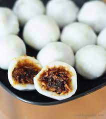

Kozhukatta

Description
The foods made for annual holidays, like this Kozhukatta recipe,
are my favorite. It’s because every year I feel like I learn something new
and grow with the process of making it. In my first year of making
kozhukatta, I couldn’t get the dough right or the filling would be too
watery or the dumpling crack open while steaming. In keeping up with the
tradition, I learned little tricks and tips to make these recipes better
and even started added my own flair to make it feel like more of my own.
I find this to be the beauty of the process.
Ingriedents
For The Filling
- Jaggery or Dark Brown Sugar 3/4 cup
- Grated Coconut 1 1/2 cup
- Green Cardamom 10 pods, seeds only, ground
- Cumin Seeds 1/2 tsp ground
For the Dough
- Rice Flour 1 1/4 cup
- Water 1 cup
- Coconut Milk 1/2 cup
- Salt 1/4 tsp
- Coconut Oil 1 tsp
Steps
Make the filling
- In a skillet on medium heat, add the jaggery and 2 tbsp of water.
- After about 1 minute, the jaggery will dissolve and start to bubble. At this point, add in the grated coconut, ground green cardamom seeds, and ground cumin.
- Continuously mix this on medium heat until most of the moisture evaporates and the jaggery sticks to the coconut.
Set aside.
- Add the rice flour to a clean skillet on medium heat.
- Lightly toast the rice flour for about 1-2 minutes to remove some of the starch and raw flavor. (You will see a little steam rise from the rice flour which indicates it has been roasted long enough.)
Transfer to a bowl and set aside.
- Now, in the same skillet, add the water, coconut milk, and salt and increase the heat to medium high. Allow this to come to a low boil.
- Little by little and with a mixing spatula ready in hand, pour in the toasted rice flour and mix to begin forming a dough. It will look crumbly at first, but will slowly start coming together as the liquids absorb into the flour.
If it is still too crumbly, add more warm water.
- Once the dough starts coming together add the coconut oil and continue mixing until the dough is fully combined and soft to the touch.
The dough should hold its shape when pressed.
- Now, transfer the dough to a silicone mat or clean counter surface and let rest for about a minute before knead the dough well for 2-3 minutes. We want to ensure the moisture and flour have fully absorbed together.
- Separate the dough into about 10 lime-sized balls.
- Rub your hands with coconut oil and roll the dough pieces into a round ball. Use your thumb to press into the center of the ball. Gently rotate and press the dough outward until you have formed a little bowl.
Be careful to not press the dough too thin or else it will crack while steaming.
- Add about a tbsp of the jaggery coconut filling to the little dough bowls.
With your hand cupping the dough bowl, squeeze your fingers forward to fold the bowl, then pinch the opposites sides of the bowl to start closing the seam and forming a round ball.
Be sure there are no cracks or openings where you can see the jaggery filling or else it will break open as it expands while steaming.
- Steam and enjoy!
Back